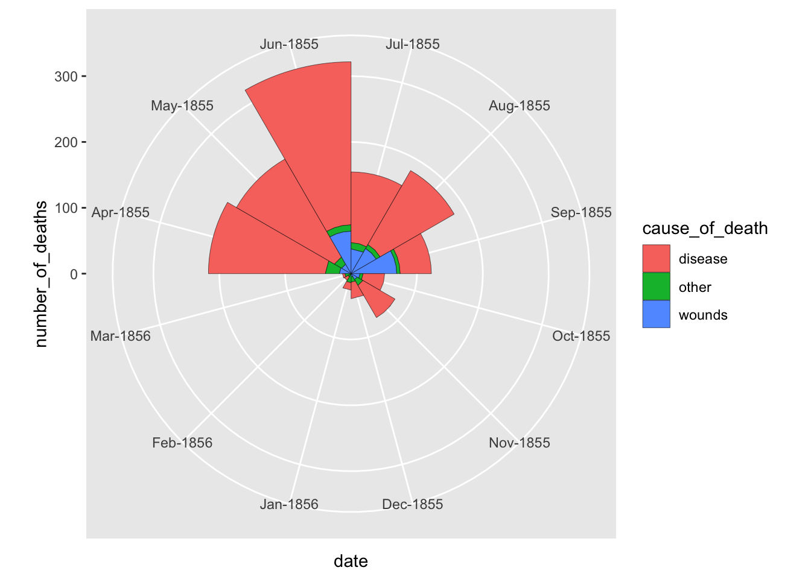

library(tidyverse)
library(jsonlite)
library(lubridate)
library(buad312data)Modern method for displaying one numeric and one categorical variables over time
nightingale %>% ggplot(aes(x = date, y = number_of_deaths, color = cause_of_death)) +
geom_line()+
# geom_bar(stat = "identity", position = "dodge") +
scale_x_date(date_breaks = "1 month") +
theme(axis.text.x=element_text(angle = -45, hjust = 0)) +
geom_vline(xintercept = ymd("1855-04-01"), color = "red") +
geom_vline(xintercept = ymd("1854-11-01"), color = "blue") +
annotate("text",x=ymd("1855-04-01"), label="The sanitation committee arrives", y=500, color = "red", vjust = -1, hjust = -0.05)+
annotate("text",x=ymd("1854-11-01"), label="Nightingale arrives", y=500, color = "blue", vjust = -1, hjust = 1.1)coord_polar() function.nightingale %>%
filter(date < ymd("1855-04-01")) %>%
mutate(date = forcats::as_factor(strftime(date,"%b-%Y"))) %>%
ggplot(aes(x = date, y = number_of_deaths, fill = cause_of_death)) +
geom_bar(stat="identity",width=1,colour="black",size=0.1)+
coord_polar( start = -pi/2)nightingale %>%
filter(date >= ymd("1855-04-01")) %>%
mutate(date = forcats::as_factor(strftime(date,"%b-%Y"))) %>%
ggplot(aes(x = date, y = number_of_deaths, fill = cause_of_death)) +
geom_bar(stat="identity",width=1,colour="black",size=0.1)+
coord_polar( start = -pi/2)
With out the y-axis, it is hard to compare the magnitudes. Let’s put the plots side-by-side with the same y-axis range.
avg_annual_mort <- nightingale %>%
mutate(
before = ifelse(date < ymd("1855-04-01"), "Before the sanitation committee arrived", "After the sanitation committee arrived"),
date = forcats::as_factor(strftime(date,"%b-%Y")))
avg_annual_mort %>%
ggplot(aes(x = date, y = number_of_deaths, fill = cause_of_death, group = before)) +
geom_bar(stat="identity",width=1,colour="black",size=0.1)+
coord_polar( start = -pi/2) +
facet_wrap(~before) +
labs(x = "", y = "")